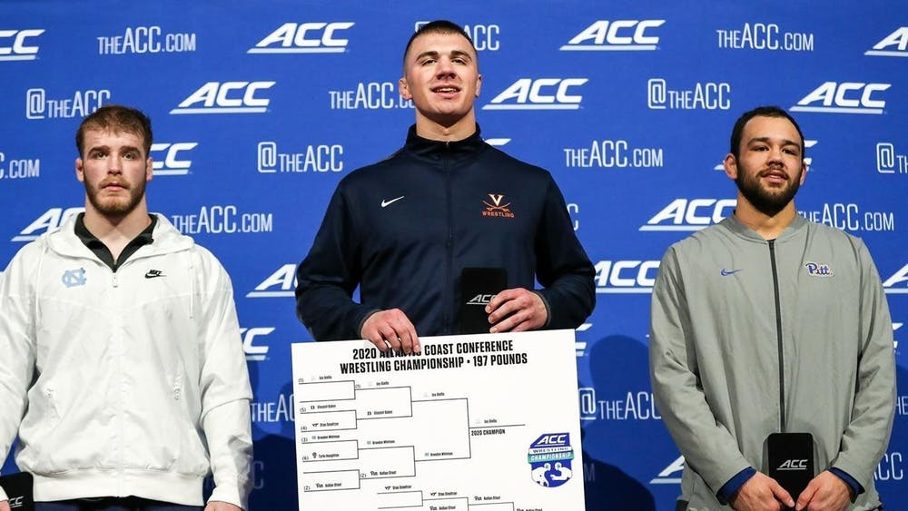

By Chad Whych | 03/12/2020

After facing five of the nation’s top 10 teams in conference dual meets, Virginia came into the ACC Tournament primed and ready to compete. As a team, the Cavaliers (8-6, 1-4 ACC) used this experience to rack up 60.5 team points, placing fourth in the ACC Tournament. Individually, over half of their starting wrestlers qualified for the NCAA Tournament.
Among many strong performers for Virginia, junior Jay Aiello was a standout, backing up his current No. 5 national ranking at 197 pounds. After defeating North Carolina sophomore Brandon Whitman, Aiello was crowned the Cavaliers’ sole ACC champion this year. With his first-place finish, Aiello improves to 27-4 overall on the season. This also marks his second straight year making it to the NCAA tournament.
Along with Aiello, junior Louie Hayes, sophomore Denton Spencer and senior Jack Mueller also earned spots on the podium.
Hayes — wrestling at 133 pounds — recorded a third-place finish by narrowly defeating NC State redshirt freshman Jarrett Trombley. Spencer — wrestling 149 pounds — also finished in third after a 7-0 decision over NC State sophomore A.J. Leitten.
Although Mueller secured a second-place finish at 125 pounds, his placement was one of the biggest surprises for Virginia. All season long, Mueller was ranked No. 2 in the country in his weight class at a time when no other ACC wrestler was ranked in the top 15. After losing his first match of the season to NC State redshirt freshman Jakob Camacho in the ACC finals, Meuller has now fallen to No. 4, while Camacho has risen to No. 9 from his previous ranking of No. 18.
However, if Mueller can improve from his defeat, he could upset the undefeated reigning NCAA champion — Iowa junior Spencer Lee — who defeated him last year in the national finals. Regardless, with his runner-up finish in the ACC tournament, Mueller became Virginia’s 11th four-time NCAA qualifier.
Due to their podium finishes, Aiello, Hayes and Mueller all earned spots in the NCAA tournament field. Three other Virginia wrestlers also earned automatic bids — given to a certain number of wrestlers from each conference’s weight class depending on their placement.
The final three qualifying wrestlers were sophomores Quinn Miller and Cam Coy and redshirt freshman Justin McCoy. McCoy and Coy both placed fourth in their respective weight classes. McCoy went 2-2 on the day while Coy went 1-2. Despite his loss, Coy wrestled hard, squeezing out a last-second overtime victory over top-seeded North Carolina junior Kennedy Monday in the consolation semifinals and punching his ticket to Minneapolis. Lastly, despite going 2-2, Miller qualified in exciting fashion by defeating Duke freshman Jonah Niesenbaum via technical fall in their fifth-place match.
“It was a really good day overall for Virginia wrestling,” Coach Steve Garland said. “There were a lot more positives than there were negatives. We got six qualifiers for the NCAA Championships, and we’re very excited about that. We finished in fourth place — which put us ahead of [Virginia Tech], a top-10 team — but that just shows how tough this tournament really is and crazy the postseason can be.”
Wednesday, the NCAA announced the full tournament brackets and seeding for the national championships. Mueller and Aiello lead the way with the No. 4 and No. 7 seeds in their respective weight classes. Hayes, Miller, McCoy and Coy also secured the No. 20, No. 23, No. 27 and No. 32 seeds, respectively.
The Cavaliers were scheduled to travel to Minneapolis to compete in the NCAA tournament at U.S. Bank Stadium. While the tournament was set to run from March 19 to March 21, the NCAA canceled the competition and all other championship events for spring and winter sports due to the outbreak of COVID-19. Additionally, Virginia Athletics suspended all athletics activities until further notice.